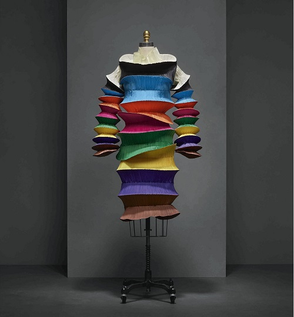

Present day fabric technology
Today as fabric technology, at the ground we have materials used to make clothes with synthetic fibres leading the way. These clothes are particularly manufactured to settle some inconveniences like wrinkles and maintenance, something which is not convenient when we talk about natural fibres.
Some examples are:-
- Nylon is a generic designation for a family of synthetic polymers, based on aliphatic or semi-aromatic polyamides. Nylon is a thermoplastic silky material that can be melt-processed into fibers, films or shapes.
- Rayon is a manufactured fiber made from regenerated cellulose fiber. The many types and grades of rayon can imitate the feel and texture of natural fibers such as silk, wool, cotton, and linen. The types that resemble silk are often called artificial silk.
- Polyesters include naturally occurring chemicals, such as in the cutin of plant cuticles, as well as synthetics such as polybutyrate. Natural polyesters and a few synthetic ones are biodegradable, but most synthetic polyesters are not. The material is used extensively in clothing.
However, a mix of natural and synthetic substances is derived to have the ideal characteristics present in a fabric.
3-D printing
• 3-D printing is now a major turning point for garments and clothing industry which can very easily replace the traditional practices of spinning and weaving by automating the entire process using a 3-D printer.
• 3-D printing can be a stark solution to the everyday requirement of fashion. Only raw material and we can have a new outfit ready. This is going to be a huge tipping point in the fabric industry in the years to come.
• However the technology, is present yet unable to provide us with a viable solution. The material is a problem and another problem is having the clothes to certain specification, which cannot be obtained using a 3-D printer
Smart Clothing
AIO smart sleeve
Despite a failed Kickstarter campaign, Komodo Technologies still found a way to launch its compression sleeve that uses electrocardiogram (ECG) technology to monitor heart rate activity.
Aside from offering accurate heart rate data, it monitor sleep, workout intensity and is available in two different models. It also has sensors on board to monitor body temperature, air quality and UV rays.
Project Jacquard
Levi's Commuter Trucker Jacket will be the first piece of connected clothing to launch from Google's Project Jacquard platform.
By building touch and gesture sensitive areas on the jacket sleeve, users will be able to interact with a variety of services including music and map apps. You'll be able to dismiss phone calls with a swipe or double tap to get directions all without reaching for your phone.
After a delayed launch, the smart denim jacket is finally ready to smarten up your commute in more ways than one.
Hexoskin Smart
The Montreal based smart clothing startup recently unveiled its latest connected shirt that's laced with sensors. Along with monitoring heart rate, breathing and movement, it's now fitted with a Bluetooth Smart sensor so you can pair your favourite fitness apps such as MapMyRun, RunKeeper and Strava, as well as a whole host of third-party accessories.
Data is captured in real time and sends it all to the companion app, providing insights on a range of sporty metrics including intensity and recovery, calories burned, fatigue level and sleep quality.
Sensoria running socks 2.0
 Sensoria's second gen connected socks aim to track your runs in detail, offering information on pace, distance and time as well as your running style. They can help users run with better form thanks to a new AI coach, which can lead to faster times and a reduced risk of injury.
Sensoria's second gen connected socks aim to track your runs in detail, offering information on pace, distance and time as well as your running style. They can help users run with better form thanks to a new AI coach, which can lead to faster times and a reduced risk of injury.
The socks feature three textile pressure sensors, which measure the pressure placed on the foot during running. The new Sensoria Core module, which does the brain work is now also smaller and lighter to wear than the original. A new monthly subscription also unlocks a new dashboard and new training plans.
Samsung NFC suit
Samsung is going big on smart clothing and has already shown off its Body Compass workout shirt, which monitors biometric data, and a golf shirt in collaboration with Bean Pole Golf that includes weather and UV rating monitoring.
The Korean giant also has an NFC smart suit, built in collaboration with Rogatis, that lets the wearer unlock their phone, swap business cards digitally and set gadgets to office and drive modes.
It's already sale in Korea for roughly $500 under Samsung's wearable brand The Human Fit, with no news yet as to whether it's going to break out into other territories.
Athos
Athos is based on expensive medical tech but designed for gym bunnies. Its range of training clothes is woven with micro-EMG sensors that detect which of your muscles are working and transfer this workout data to a smartphone via a Bluetooth core.
Muscle effort, heart rate and breathing are all tracked and the app provides insights to help you to exercise correctly and avoid injury. This could be the personal trainer in your pocket you've been waiting for.
Supa Powered Sports bra
Sabine Seymour's new fashion tech start up, Supa, mashes up neon, a heart rate sensor and AI to give you a smart bra with a ton of personality. It's water resistant and syncs to the Supa.AI app via Bluetooth. It'll use "invisible biometric sensors" and AI to not only keep track of workouts, but track things like UV levels, too.
Manufacting of polyester
There are three steps in the synthesizing of polyester
- Condensation Polymerization: When acid and alcohol are reacted in a vacuum at high temperatures it results in condensation polymerization. Once the polymerization has occurred the material is extruded onto a casting trough in the form of a ribbon. Once cool, the ribbon hardens and is cut into chips.
- Melt-spun Fiber: The chips are dried completely. Hopper reservoirs are then used to melt the chips. A unique feature of polyester is that it is melt-spun fiber. The chips are heated, extruded through spinnerets and cools upon hitting the air. It is then loosely wound around cylinders.
- Drawing: The fibers consequently formed are hot stretched to about five times their original length. This helps to reduce the fiber width. This fiber is now ready and would into cones as filaments. It can also be crimped and cut into staple lengths as per requirements.
Manufacturing of nylon
There are three steps in the synthesizing of polyester
- Nylons are condensation polymers or copolymers, formed by reacting difunctional monomers containing equal parts of amine and carboxylic acid, so that amides are formed at both ends of each monomer in a process analogous to polypeptide biopolymers.
- Since each monomer in this copolymer has the same reactive group on both ends, the direction of the amide bond reverses between each monomer, unlike natural polyamide proteins, which have overall directionality: C terminal → N terminal.